Personal Project - Website Developer - 2025
UI/UX - Figma Prototype
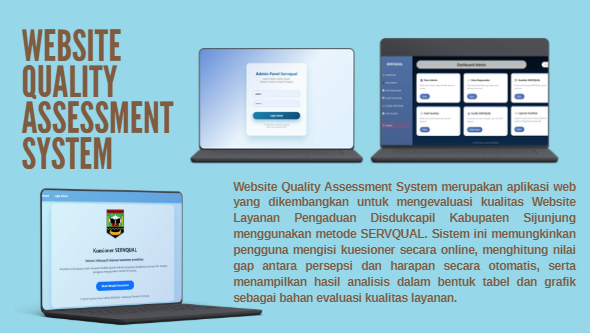
Website Quality Assessment System merupakan aplikasi berbasis web yang dikembangkan sebagai proyek tugas akhir untuk mengevaluasi kualitas Website Layanan Pengaduan Dinas Kependudukan dan Pencatatan Sipil (Disdukcapil) Kabupaten Sijunjung menggunakan metode SERVQUAL. Sistem ini dibangun menggunakan PHP dan MySQL untuk menganalisis kualitas layanan website berdasarkan persepsi dan harapan pengguna. Sistem ini memungkinkan administrator mengelola data responden, menganalisis hasil kuesioner, menghitung kesenjangan (gap) antara persepsi dan harapan pengguna menggunakan metode SERVQUAL, serta menghasilkan laporan dan tabel hasil evaluasi secara otomatis.
• Full Stack Web Developer
• UI/UX Designer
• Database Designer
• System Analyst
Sistem ini menerapkan metode SERVQUAL (Service Quality) untuk mengevaluasi kualitas website berdasarkan lima dimensi utama kualitas layanan:
Berikut merupakan beberapa tampilan antarmuka yang menampilkan fitur utama, alur penggunaan, serta fungsi utama dari sistem.
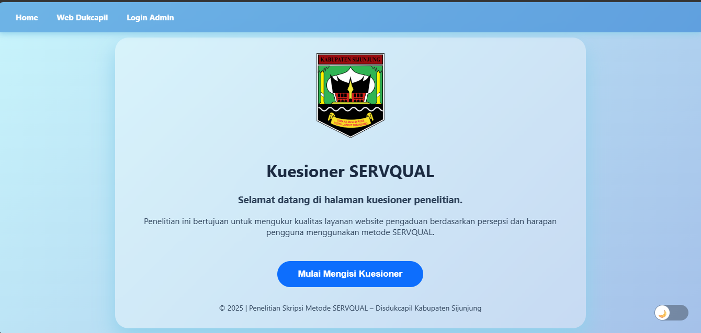
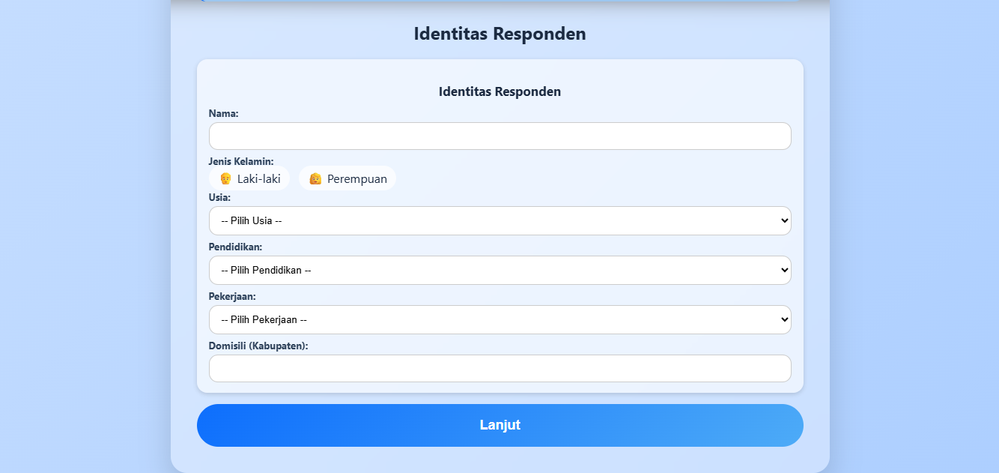
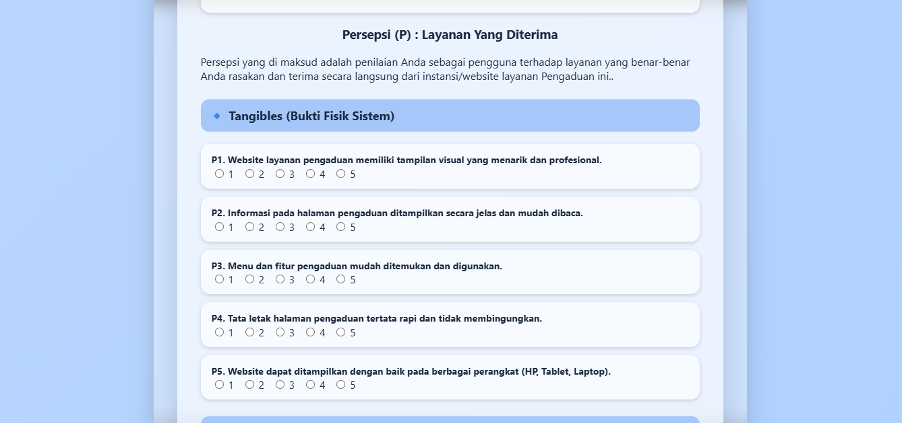
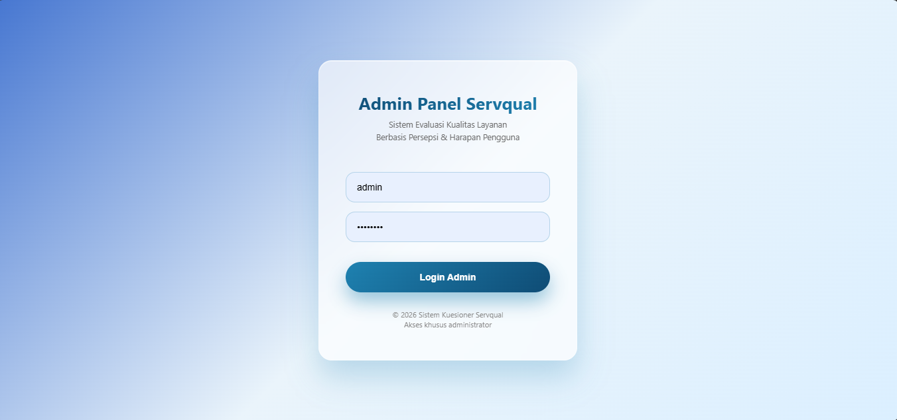
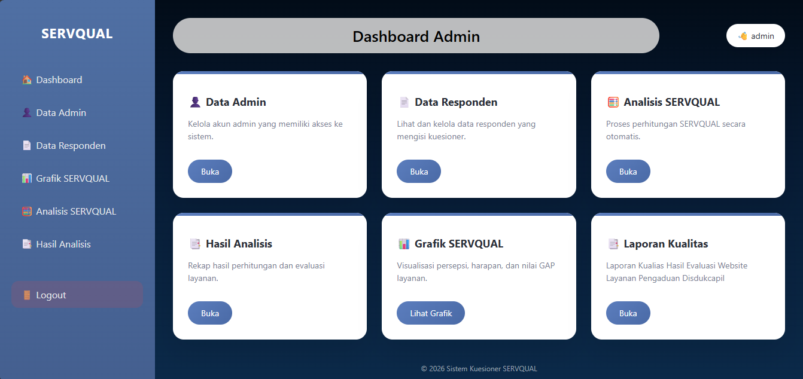
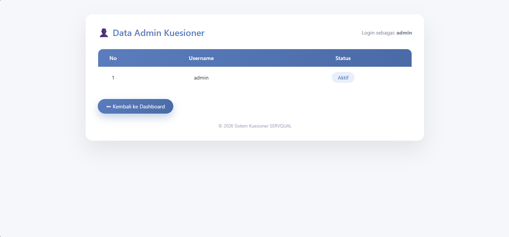
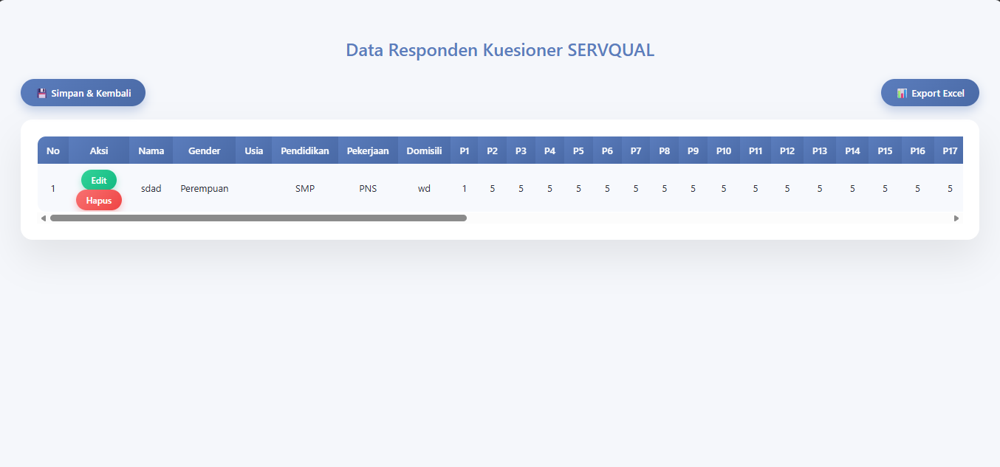
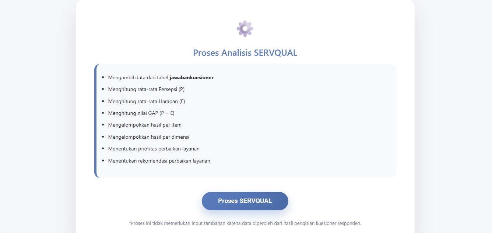
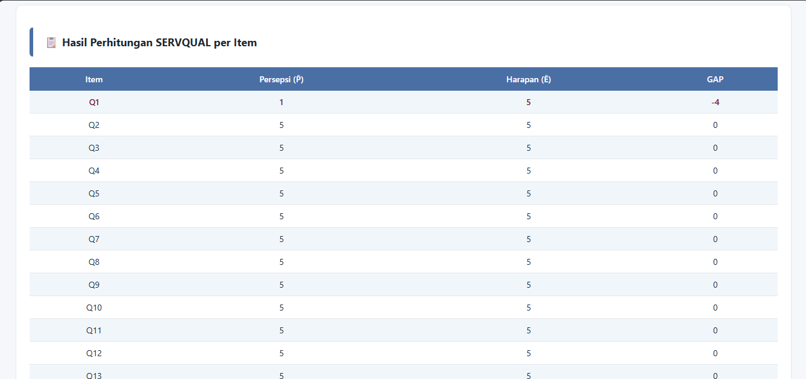
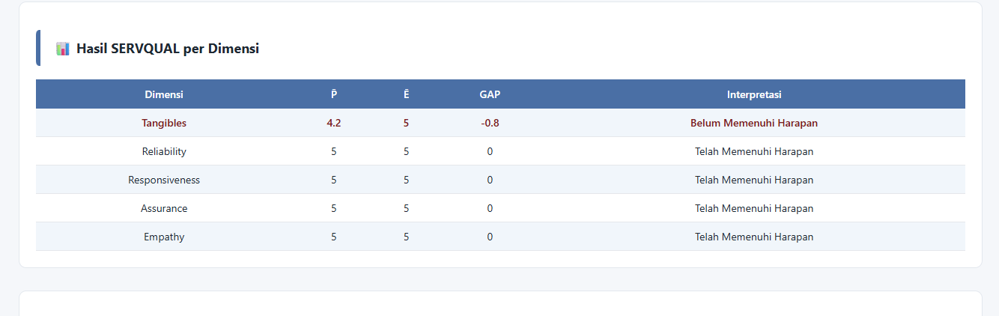
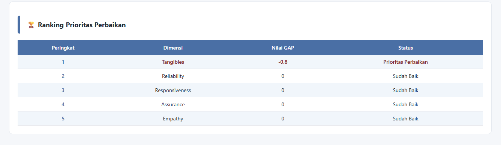
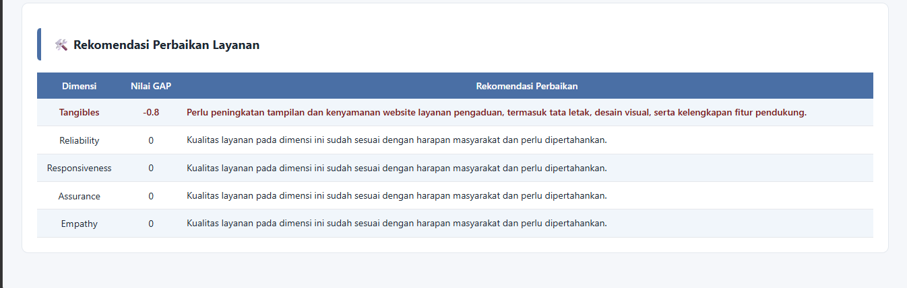
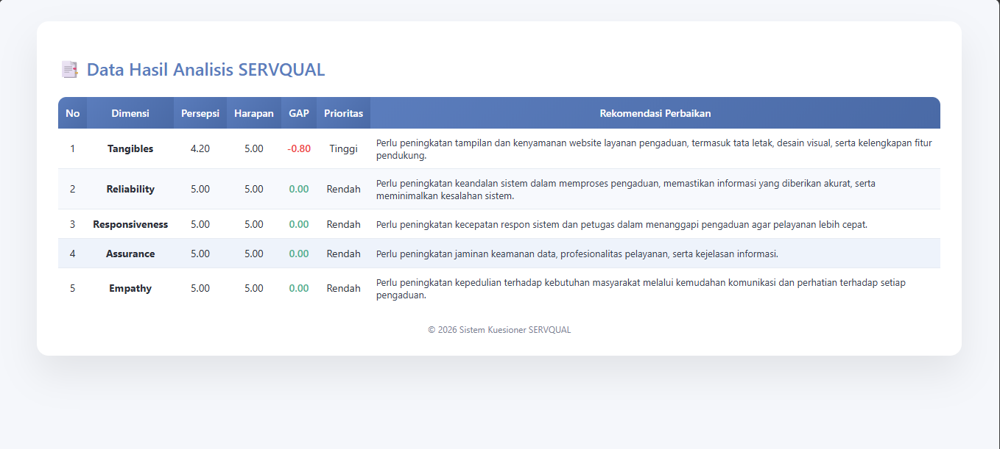
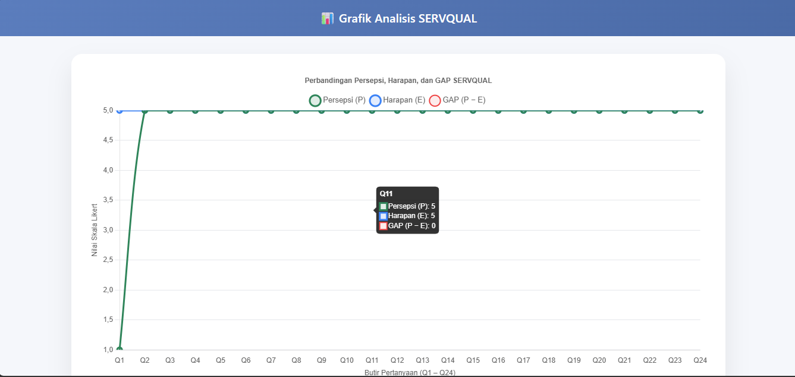
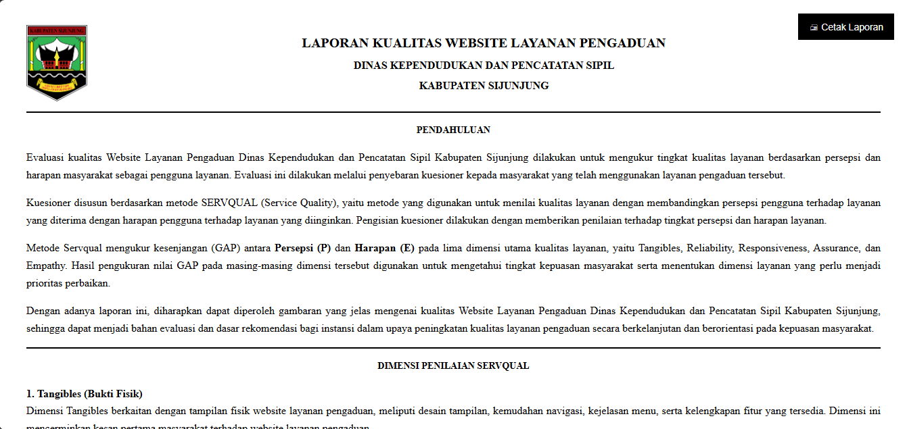